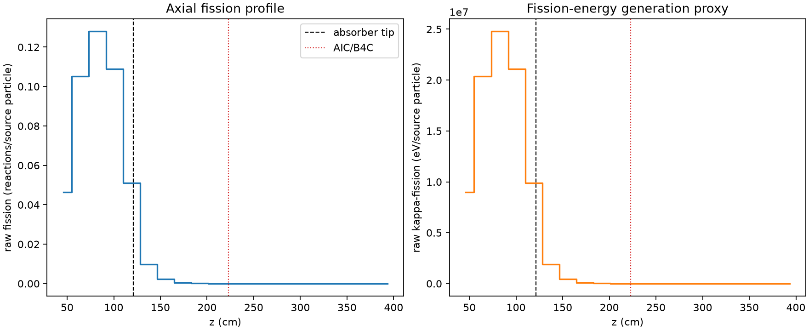
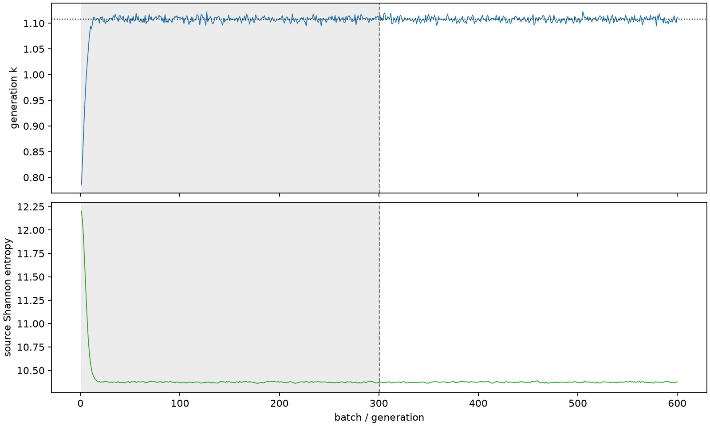

| field | value |
|---|---|
| experiment | V2-STAGE_256_OGRENCI_02-0026 |
| k | 1.1078488032064098 |
| MC standard error | 0.0001856252480489122 |
| seconds | 1008.9185908520012 |
| acceptance | not_assessed |
| convergence | review_required |
Completed is output integrity only; physical and statistical review required. Zero tallies do not prove zero production or zero uncertainty.
| diagnostic | value |
|---|---|
| geometric fuel voxels | 5280 |
| zero fission tally voxels | 1846 |
| low signal fuel voxels | 2896 |
| low signal fission share | 8.029630516920333e-05 |
| low signal kappa share | 8.033678920210449e-05 |
| important fission share | 0.95025666245304 |
| previous filter included | 2384 |
| duration estimate s | 1562.5173488400023 |
| actual minus estimate s | -553.5987579880011 |
| fission relative MC error | statistics |
|---|---|
| all_geometric_fuel | {"voxels": 5280, "positive_mean_voxels": 3434, "zero_mean_voxels": 1846, "undefined_relative_error_voxels": 1846, "median": 0.030447902033448757, "p95": 0.9796287393424336, "maximum": 1.0000000000000002} |
| low_signal | {"voxels": 2896, "positive_mean_voxels": 1050, "zero_mean_voxels": 1846, "undefined_relative_error_voxels": 1846, "median": 0.5995868920999425, "p95": 1.0, "maximum": 1.0000000000000002} |
| important_95pct | {"voxels": 1262, "positive_mean_voxels": 1262, "zero_mean_voxels": 0, "undefined_relative_error_voxels": 0, "median": 0.004808165423735902, "p95": 0.0072401936167815935, "maximum": 0.008026281815610778} |
| outside_previous_filter | {"voxels": 2896, "positive_mean_voxels": 1050, "zero_mean_voxels": 1846, "undefined_relative_error_voxels": 1846, "median": 0.5995868920999425, "p95": 1.0, "maximum": 1.0000000000000002} |
| kappa_fission relative MC error | statistics |
|---|---|
| all_geometric_fuel | {"voxels": 5280, "positive_mean_voxels": 3434, "zero_mean_voxels": 1846, "undefined_relative_error_voxels": 1846, "median": 0.03040002475214832, "p95": 0.97962553327501, "maximum": 1.0000000000000002} |
| low_signal | {"voxels": 2896, "positive_mean_voxels": 1050, "zero_mean_voxels": 1846, "undefined_relative_error_voxels": 1846, "median": 0.599090501077528, "p95": 1.0, "maximum": 1.0000000000000002} |
| important_95pct | {"voxels": 1262, "positive_mean_voxels": 1262, "zero_mean_voxels": 0, "undefined_relative_error_voxels": 0, "median": 0.004802194166427989, "p95": 0.007232031107547363, "maximum": 0.008015932573200144} |
| outside_previous_filter | {"voxels": 2896, "positive_mean_voxels": 1050, "zero_mean_voxels": 1846, "undefined_relative_error_voxels": 1846, "median": 0.599090501077528, "p95": 1.0, "maximum": 1.0000000000000002} |
| axial bin | fission share | kappa-fission share |
|---|---|---|
| 1 | 0.10281408565551078 | 0.10281695038828827 |
| 2 | 0.2324981831286375 | 0.23249191507594621 |
| 3 | 0.2830815913511468 | 0.2830736699831307 |
| 4 | 0.24080890372163122 | 0.2408023680898129 |
| 5 | 0.11272389774795583 | 0.11273005633536029 |
| 6 | 0.021566599744981773 | 0.0215754271665567 |
| 7 | 0.004979715753288133 | 0.004981891566965201 |
| 8 | 0.001163635917006775 | 0.0011641676169433532 |
| 9 | 0.000281215799158022 | 0.00028134053188651095 |
| 10 | 6.446618114818974e-05 | 6.449916429780241e-05 |
| 11 | 1.4285790039958836e-05 | 1.4291903839374486e-05 |
| 12 | 2.6411959521389447e-06 | 2.6426563259262674e-06 |
| 13 | 6.29355925268556e-07 | 6.308397330456403e-07 |
| 14 | 1.4782796865109266e-07 | 1.4785236411080654e-07 |
| 15 | 8.296489501439958e-10 | 8.285496798858972e-10 |
| 16 | 0.0 | 0.0 |
| 17 | 0.0 | 0.0 |
| 18 | 0.0 | 0.0 |
| 19 | 0.0 | 0.0 |
| 20 | 0.0 | 0.0 |
Histories include the inactive-to-active transition at batch 300. kappa-fission approximates fission energy production, not total heat deposition.

